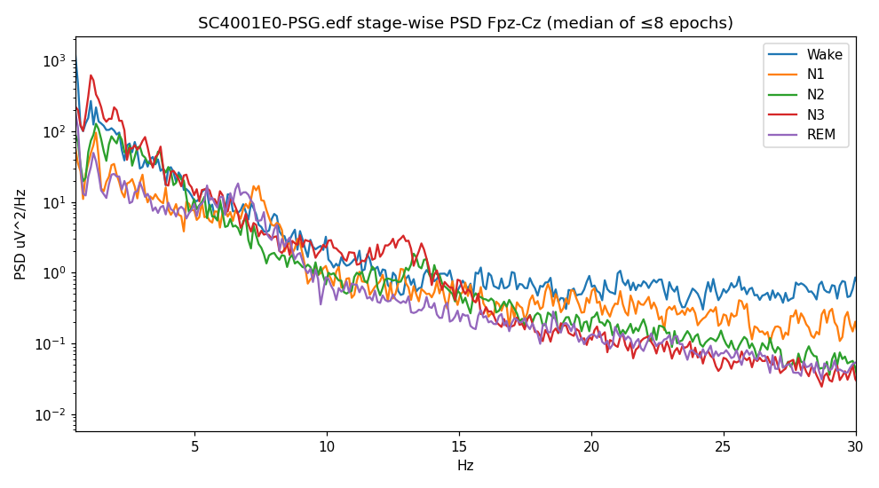
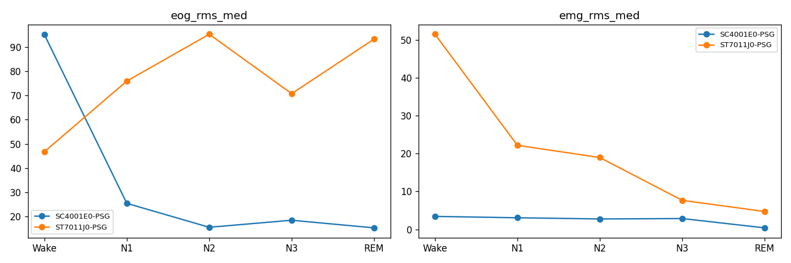
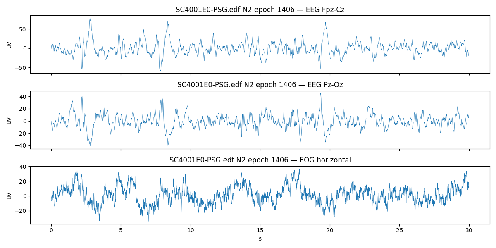
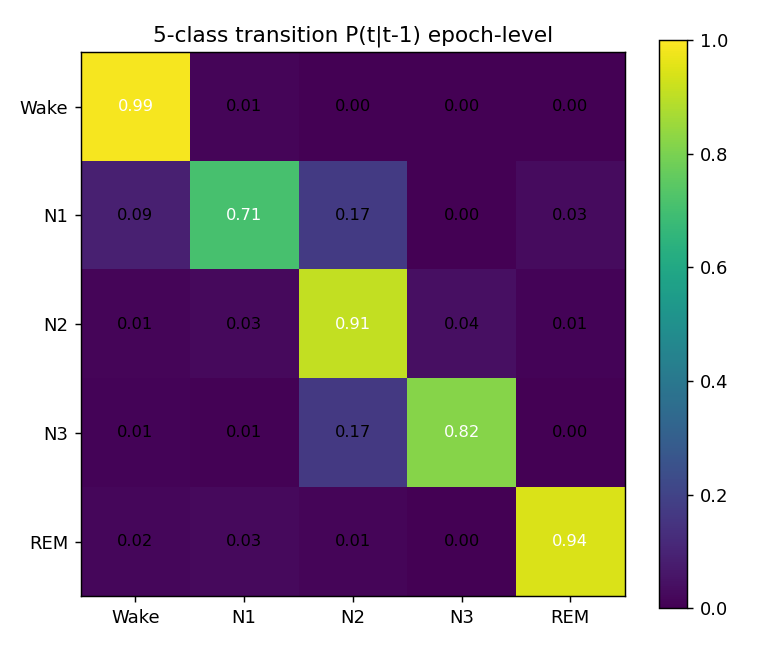
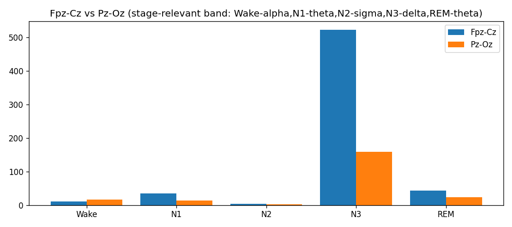
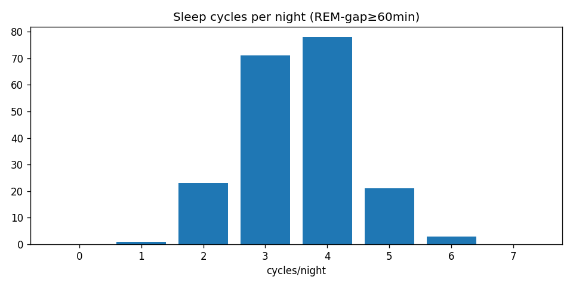
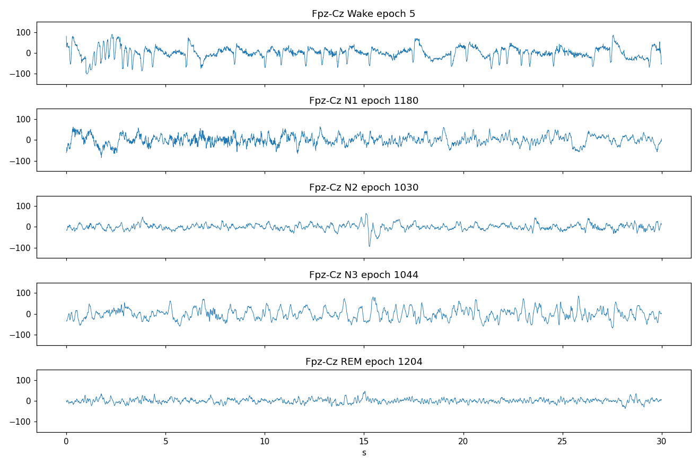
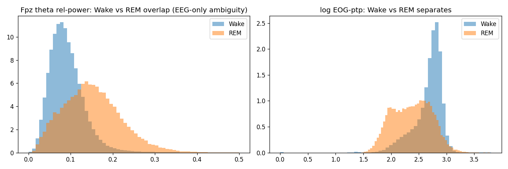

SleepLens
An expert-assistant for sleep: five-class staging with calibrated confidence, a published sleep-depth transformer, 96 night-level features, and one explainable quality score — built inference-first on Sleep-EDF Expanded (197 nights), with a self-contained backend.
5th AI Factory Hackathon · Brain Innovation Center (IUMS). Every number traces to a committed artifact — no rounded-up claims, failed experiments kept in the same tables.
What the hackathon asks — 6 missions, 8 outputs
آیا میتوان با هوشمصنوعی کیفیت خواب را از سیگنالهای بدن فهمید و این دانش را به یک محصول ساده، قابلاستفاده و قابلتجاریسازی تبدیل کرد؟
Six missions (paraphrased from the brief)
- Build an interpretable Sleep Quality Score from full PSG.
- Predict the same score from minimal signal (one/few EEG or ECG channels).
- Validate simplified vs reference model.
- Explain which signal patterns the model found important.
- Display results in plain, user-friendly language.
- Show what product can be built on the algorithm.
Logistics we designed against
- Event: Wed 1 → Fri 3 Mehr · teams of 1–4 · laptop required
- First prize 50M IRT + startup-space memberships
- Jury: Dr. F. Kashaninasab (sleep psychiatrist) · Dr. F. Mirfazeli (IUMS)
- No published scoring weights — so we over-deliver on the measurable outputs: model + minimal channel + validation + explainability
| # | Required output | Our deliverable | Status |
|---|---|---|---|
| 01 | Sleep Quality Model (full data) | E19 ensemble + night features + SDI composite | done |
| 02 | Single-Channel / minimal model | Fpz+EOG = −0.004 vs 3ch; Fpz-only keeps 97% | done |
| 03 | Validation vs reference | Full-197 tables (ALL/SC/ST/per-class), fold-honest ensembles | done |
| 04 | Demo | Django+DRF API + Next.js dashboard (hypnogram, depth, signals, report) | done |
| 05 | Explainability | SHAP ×2 families, attention, intervention, calibrated confidence | done |
| 06 | Product concept | Expert-assistant framing, PSQI intake, LLM report, chat | done |
| 07 | Code / pipeline | Repro harness: adapters, evaluator, 56 tests, weights in-repo | done |
| 08 | Bonus (customer / revenue) | Clinics + wearables; per-study API / subscription / OEM licensing | done |
Source: official hackathon page (aiif.ai/pol-hackathon5.html) + Persian brief extraction.
Lab precision vs everyday data — the gap we close
Full PSG is rich, daily life is poor
A sleep lab records brain activity, eye movements, muscle tone, heart, breathing, oxygen — but nobody sleeps in a lab every night. The hackathon bet: a quality score learned on full PSG should survive on minimal everyday signal.
Six quality dimensions (from the brief)
- Sleep continuity · 2. Sleep stages · 3. Breathing · 4. Heart rate · 5. Brain activity · 6. Apneas & oxygen drops
Our dataset reality check (slide 3): dimensions 3–6 are only partially observable — no SpO2, no ECG, no leg EMG anywhere. We mark what we cannot assess instead of faking it.
Domain framing from the hackathon brief; sensor audit from sleep-eda tables/channels.csv.
Sleep-EDF Expanded — 197 real nights, two different worlds
Inventory (399 files · 394 EDF · 8.715 GB)
- SC — sleep-cassette (home): 153 nights · 78 subjects · mean 22.68 h (17–24 h). Daytime naps included. EMG is a 1-Hz envelope (±5 µV).
- ST — sleep-telemetry (hospital): 44 nights · 22 subjects · mean 8.61 h (7.5–10.7 h). Raw 100-Hz EMG (±3000 µV). Amplitudes ~2–3× SC.
- 100 subject-prefixes, mostly 2 nights each; 3 nights lost upstream (SC36-n1, SC52-n1, SC13-n2). Pairing PSG↔hypnogram perfect by stem.
Channels — present vs absent
| Channel | n/197 | Note |
|---|---|---|
| EEG Fpz-Cz · Pz-Oz · EOG horiz. | 197 | @100 Hz, all nights |
| EMG submental | 197 | two sample rates — never pooled raw |
| Resp / Temp / Event | 153 | SC only (1 Hz) |
| Marker | 44 | ST only (10 Hz) |
| SpO2 · ECG/HR · leg EMG · position | 0 | absent everywhere |
Consequence: AHI/ODI/PLMI/HR features are impossible here (sqi_feature_feasibility.csv) — our SQI is built only from computable quantities.
Sources: sleep-eda tables/recordings.csv, channels.csv, cohort_compare.csv, llm/01–02.
Class balance, the trimming decision, and why N1 is the story


N1 is rare and ambiguous
Only ~5.2% of epochs; literature inter-rater agreement for N1 ≈ 63%. It dominates macro-F1 differences: our final system reaches N1 F1 0.638 where YASA gets 0.07 and RSN 0.44.
Three windows, one contract
FULL_VALID 457,652 · BENCHMARK_30 237,936 (headline) · MAIN (SQI) 196,959 epochs. Splits are subject-atomic (folds5_v3) — zero leakage. SQI is always computed untrimmed.
Sources: tables/class_distribution.csv, annotations_summary.csv, llm/04, eda_summary_v3.json.
Signals behave the way sleep medicine says they should


EOG ladder (µV ptp)
Wake 548 ≫ REM 242 > N3 145 ≈ N1 142 > N2 102 — the strongest single Wake/REM discriminator.
EMG ladder (µV rms)
Wake 3.31 > N1 2.96 > N3 2.62 > N2 2.50 > REM 1.46 — REM atonia holds dataset-wide (SC 3.3×, ST 3.2×).
EEG markers
Delta: N3 .924 · sigma: N1 .045 > N2 .0375 (spindles) · theta: REM .147 · alpha: N1 .076 · eeg_std: N3 28.6 vs N1 11.8 µV.
Sources: tables/stage_band_medians_full.csv, eog_emg_by_stage.csv, llm/06, llm/24.
SC4001: 22.1 h, 2,880 epochs — the unit every model sees


Expert architecture of this night
TIB 369 min · TST 326.5 · SE 88.5% · SOL 5.5 · WASO 67 · REM-lat 89 · N1 8.9% · N2 38.3% · N3 33.7% · REM 19.1% · 113 transitions · 0 unscored. Cohort context: MAIN-window SE 85.9% (SC 84.7 / ST 91.8); age↔N3% r = −0.40; sleep cycles/night mean 3.53, median 4.
Sources: tables/sleep_architecture_main.csv, subject_class_distribution.csv, llm/12, llm/17.
Transitions are lawful; cohorts are not interchangeable


Run structure
Median run lengths (epochs): REM 11 · N2 4 · Wake 2 · N1 2 · N3 1. A 5–11-epoch context covers N2/REM runs — the design argument for temporal models (RSN 900-s window, AnySleep ~14-min field).
Wake–REM ambiguity (measured)
Daytime Wake with eyes open looks REM-like on EEG (Fisher δ ≈ 0.06, useless). Separation comes from EOG + EMG atonia — which is exactly what the channel ablations later confirm.
Sources: tables/transition_matrix.csv, trans_in_bench_SC.csv, llm/07, llm/23, llm/24, llm/20.
Inference-first ladder, one contract, fold-honest evaluation
One contract per model
Each adapter loads raw EDF through the canonical
100-Hz loader, applies the model's own preprocessing, writes
stem, epoch_index, p_Wake…p_REM — never a shared pipeline.
One benchmark window
BENCHMARK_30 = first sleep −30 min → last sleep +30 min: 237,936 epochs from 197 nights; FULL_VALID 457,652 for robustness.
Honesty machinery
Shift sweeps (all peak at 0), 5-class permutation checks, per-cohort reporting, fold-honest selection (pick on 4 folds, score the 5th).
Bugs the harness caught (fixed, documented)
RobustSleepNet context padding leaked into outputs → trim fix 0.43 → 0.80 · YASA before-vs-after window crop: +0.085 · Windows DLL order (torch before pandas) · ST gap misalignment fixed by authoritative grid.
sleep-stage/eval/run_eval.py, debug_checks.py, docs/METRICS.md, MODELING_LOG.md.
E00 · LightGBM on 11 bandpower features trained on our data
What it is
- 11 per-epoch features: eeg_std, eeg_ptp, zero-crossing rate, 5 relative band powers (δ/θ/α/σ/β), eog_ptp, eog_std, emg_rms
- 300 trees · lr 0.05 · 63 leaves · balanced weights · subject-wise OOF (237,310 epochs)
- No temporal context — a pure signal-statistics floor
Why we keep it
The diversity engine of the winning ensemble (bandpower vs raw waveform) and the primary source of N3 recall 0.873 — the highest in the study.
Results (BENCHMARK_30)
| Metric | ALL | SC | ST |
|---|---|---|---|
| Macro-F1 | 0.6672 | 0.6717 | 0.5802 |
| N1 / N3 / REM | 0.390 / 0.735 / 0.651 | — | — |
| Full-valid macro | 0.6726 | ||
Unique profile: better on SC than ST — the only model where home is easier, because it was fit on our SC-heavy data with no domain prior to break.
adapters/e00_baseline.py · runs/E00/oof.parquet · feeds slides 18 (SHAP) + 17 (ensemble).
YASA · LightGBM + ~116 spectral features zero-shot, never saw Sleep-EDF
What it is
- Published classifier (Vallat & Walker, eLife 2021),
pip install yasa— the most cited interpretable stager - Per-epoch band powers, spectral edge, Hjorth, entropy + 15-epoch rolling context
(
_c7min_norm,_p2min_norm) - Four configs: Fpz / Fpz+EOG / Pz+EOG / Fpz+EOG crop-before-inference
Why it matters
Our interpretable baseline (TreeSHAP, slide 20) and the cheapest full-dataset channel ablation.
Results (BENCHMARK_30, 197 nights each)
| Config | ALL | SC | ST | N1 | N3 | REM |
|---|---|---|---|---|---|---|
| E02c Fpz+EOG crop | 0.5463 | 0.531 | 0.562 | 0.069 | 0.580 | 0.649 |
| E01 Fpz | 0.5225 | 0.486 | 0.611 | 0.100 | 0.538 | 0.557 |
| E02 Fpz+EOG | 0.5171 | 0.480 | 0.548 | 0.122 | 0.364 | 0.665 |
| E03 Pz+EOG | 0.4272 | 0.381 | 0.499 | 0.070 | 0.262 | 0.560 |
Two lessons: cropping to the scored window is worth +0.085; N1 is the failure mode (0.07–0.12) — the motivation for the deep models.
Paper: eLife 10:70092 (2021) · artifacts: docs/interp_yasa_*.csv (116 features, 13,298 epochs).
AnySleep · attention U-Sleep saw Sleep-EDF variants in training
What it is
- U-Sleep backbone + 13 channel-attention modules for variable montages (alphaxiv 2512.14461)
- 3.16M params; 100→128 Hz polyphase, median/IQR clip ±20; logit order verified by permutation search; weights vendored (MIT)
- Strongest on the hospital cohort (ST 0.878)
Channel ablation = the minimal-sensor answer (BENCHMARK_30, 197 nights each)
| Run | Input | ALL | SC home | ST hosp. | N1 | REM | Δ vs full |
|---|---|---|---|---|---|---|---|
| E11 | Fpz+Pz+EOG | 0.8267 | 0.809 | 0.878 | 0.622 | 0.904 | — |
| E11d | Fpz+EOG | 0.8227 | 0.811 | 0.865 | 0.592 | 0.905 | −0.004 |
| E11c | Fpz+Pz | 0.8134 | 0.797 | 0.863 | 0.594 | 0.878 | −0.013 |
| E11a | Fpz only | 0.8015 | 0.790 | 0.844 | 0.549 | 0.875 | −0.025 |
| E11b | Pz only | 0.7736 | 0.756 | 0.829 | 0.531 | 0.844 | −0.053 |
Fpz+EOG keeps 99.5% and owns the best REM recall in the study (0.913 vs 0.897 for 3ch). Single Fpz keeps 97%. Note the source gap inside every row: hospital ST is +0.05–0.07 easier than home SC for the same electrodes — the constrained choice depends on where you record, not just how many channels (see “best under constraints”).
Disclosure: checkpoint saw Sleep-EDF variants → “reference” numbers; clean zero-shot is RSN (next).
RobustSleepNet · temporal transformer zero-shot, never saw Sleep-EDF
What it is
- Published architecture (alphaxiv 2101.02452), MIT code, LODO checkpoint (7 other datasets)
- Predicts each epoch from a 900-s context → temporal by construction
- Adaptation we ship: their zero-padding leaked into outputs for the first/last 30 epochs — trimming recovered 0.43 → 0.80 macro
Results (BENCHMARK_30)
| Metric | ALL | SC | ST |
|---|---|---|---|
| Macro-F1 | 0.7501 | 0.736 | 0.788 |
| Wake / N1 / N2 / N3 / REM | 0.908 / 0.442 / 0.828 / 0.717 / 0.855 | — | — |
| Full-valid | 0.7615 · κ 0.747 · ECE 0.036 | ||
The clean number to quote. Also the ST/N1 specialist inside E16 — and the clean-ensemble anchor (RSN+GBM+YASA = 0.7608).
adapters/rsn_adapter.py + rsn_full.py (padding-trim documented inline) · runs/E20.
U-Sleep (CSDP open weights) · 0.8275 saw Sleep-EDF variants
What it is
- The only public U-Sleep checkpoint (CSDP training). Paper: npj Digital Medicine 2021; lineage: U-Time, alphaxiv 1910.11162
- 2-channel (Fpz+EOG) @128 Hz — exactly the minimal sensor set; 0.1–40 Hz, robust scaling, 480-epoch chunks; source vendored, weights in-repo
- Mirror profile of everything else: SC-strong, ST-weak — adding it gave the largest single jump measured (+0.011)
Results (BENCHMARK_30)
| Metric | ALL | SC | ST |
|---|---|---|---|
| Macro-F1 | 0.8275 | 0.833 | 0.775 |
| N1 / N3 / REM | 0.605 / 0.801 / 0.914 | — | — |
| Calibration | ECE 0.013 (ALL) · 0.005 (SC) — best-behaved probabilities | ||
| Full-valid | 0.8364 · fastest “good” model (~45 s/night) | ||
runs/E21 (full 197) · adapters/usleep_csdp_adapter.py · disclosed pretraining exposure.
SLEEPYLAND (dropped) & SleepFMStager (parked with evidence)
SLEEPYLAND · E07 (top-ranked in our bank)
- alphaxiv 2506.08574 — but delivered as Docker containers, a poor fit for a self-contained backend
- Partial sweep (49/197): 0.7859 (SC .789 / ST .644 · N1 .442 · REM .908). Pilot file n=2,327: 0.739 (SC .812 / ST .644)
- Team decision: drop the container family; keep its insight (N1 confusion is architecture-wide) and its evaluation window
SleepFMStager · E10 — parked with evidence
- Weights verified bit-identical to upstream (56 tokenizer + fc tensors); responds to synthetic inputs (spikes→class 3 @0.895, sines→class 0)…
- …but collapses to constant Wake on real EEG in 6/6 regimes (macro 0.056–0.073, ECE 0.374) → the HDF5/embedding pipeline is not reproducible from the release (CC BY-NC 4.0)
- Documented in runs/E10/NOTES.md + e10_diagnostic.csv — no fake numbers enter any table
SleepFM-1 recipe: alphaxiv 2405.17766.
Every run — BENCHMARK_30 (237,936 epochs) + full-valid
| Run | Model | rec | ALL | SC | ST | N1 | N3 | REM | full |
|---|---|---|---|---|---|---|---|---|---|
| E22 | Router SC→E19 / ST→E11 | 197 | 0.8458 | 0.836 | 0.878 | 0.638 | 0.840 | 0.919 | — |
| E23b | 5 binary experts, margin vote | 197 | 0.8433 | 0.837 | 0.865 | 0.638 | 0.832 | 0.915 | — |
| E19 | ANY3ch+ANYFpzEOG+USleep+LGBM | 197 | 0.8425 | 0.836 | 0.865 | 0.635 | 0.833 | 0.915 | 0.8513 |
| E19b | E19 + class bias | 197 | 0.8417 | 0.835 | 0.868 | 0.638 | 0.833 | 0.915 | 0.8510 |
| E18 | AnySleep×3+LGBM+bias | 197 | 0.8316 | 0.820 | 0.873 | 0.617 | 0.825 | 0.900 | 0.8404 |
| E17 | AnySleep×3+LGBM | 197 | 0.8315 | 0.820 | 0.872 | 0.610 | 0.825 | 0.901 | 0.8398 |
| E16 | 0.7ANY+0.3RSN+bias | 197 | 0.8291 | 0.813 | 0.878 | 0.624 | 0.800 | 0.904 | 0.8370 |
| E21 | U-Sleep CSDP | 197 | 0.8275 | 0.833 | 0.775 | 0.605 | 0.801 | 0.914 | 0.8364 |
| E11 | AnySleep 3ch | 197 | 0.8267 | 0.809 | 0.878 | 0.622 | 0.788 | 0.904 | 0.8347 |
| E11d | AnySleep Fpz+EOG | 197 | 0.8227 | 0.811 | 0.865 | 0.592 | 0.812 | 0.905 | 0.8322 |
| E11c | AnySleep Fpz+Pz | 197 | 0.8134 | 0.797 | 0.863 | 0.594 | 0.785 | 0.878 | 0.8214 |
| E11a | AnySleep Fpz | 197 | 0.8015 | 0.790 | 0.844 | 0.549 | 0.796 | 0.875 | 0.8093 |
| E07 | SLEEPYLAND (partial) | 49 | 0.7859 | 0.789 | 0.644 | 0.442 | 0.794 | 0.908 | 0.7929 |
| E11b | AnySleep Pz | 197 | 0.7736 | 0.756 | 0.829 | 0.531 | 0.748 | 0.844 | 0.7608 |
| E20 | RobustSleepNet | 197 | 0.7501 | 0.736 | 0.788 | 0.442 | 0.717 | 0.855 | 0.7615 |
| E00 | LightGBM | 197 | 0.6672 | 0.672 | 0.580 | 0.390 | 0.735 | 0.651 | 0.6726 |
| E02c | YASA crop | 197 | 0.5463 | 0.531 | 0.562 | 0.069 | 0.580 | 0.649 | 0.5463 |
| E01 | YASA Fpz | 197 | 0.5225 | 0.486 | 0.611 | 0.100 | 0.538 | 0.557 | 0.5574 |
| E02 | YASA Fpz+EOG | 197 | 0.5171 | 0.480 | 0.548 | 0.122 | 0.364 | 0.665 | 0.5582 |
| E03 | YASA Pz+EOG | 197 | 0.4272 | 0.381 | 0.499 | 0.070 | 0.262 | 0.560 | 0.4744 |
| E10 | SleepFMStager | 3 | 0.063 | — | — | 0.000 | 0.000 | 0.000 | 0.1487 |
Equal-weight probes: E11+E00+E11c 0.8307 · top-4 0.8303 · E11+E00+E11a 0.8288 · all-five 0.8279 · E11+E20 0.8108 (< E11 alone). Clean-only (RSN+GBM+YASA) 0.7608. E17/E18 lose 626 epochs (LightGBM gaps; n=237,310).
Machine-readable: sleep-stage/docs/results_table.csv, results_per_cohort.csv, runs/*/metrics_in_bench.csv.
Class champions — no single run wins every stage
| Stage | Champion (bench ALL) | F1 | Recall | Prec. | Runner-up · best-recall expert |
|---|---|---|---|---|---|
| Wake | E16 (0.7ANY+0.3RSN+bias) | 0.941 | 0.928 | 0.955 | E11 0.941 · YASA-crop recall 0.993 |
| N1 | E19b (+bias) | 0.638 | 0.691 | 0.592 | E19 0.635 · itself |
| N2 | E19 | 0.892 | 0.904 | 0.881 | E19b 0.891 · itself |
| N3 | E19b | 0.833 | 0.830 | 0.837 | E19 0.833 · LGBM recall 0.873 |
| REM | E19 | 0.915 | 0.915 | 0.915 | E19b 0.915 · E19b recall 0.918 |
Cohorts want different models
SC: REM champion is E21 U-Sleep 0.919; Wake/N1/N3 stay E16/E19b. ST: E11 sweeps N2 0.921 · N3 0.873 · REM 0.949, N1 goes to E16 at 0.745. This grid is the empirical basis of the E22 router.
Full-valid agrees
Same champions on all 457,652 valid epochs (Wake E16 0.985 — daytime Wake inflates it, another reason the headline is BENCHMARK_30).
Sources: docs/CLASS_CHAMPIONS.md, class_champions.csv, class_recall_champions.csv.
E19 → E22: how the winner was built, fold-honestly
E19 = mean of 4 streams
p = mean(AnySleep-3ch, AnySleep-FpzEOG,
U-Sleep CSDP, LightGBM), argmax. Equal weights — no tuning to overfit.
All 5 folds independently chose ANY3ch + U-Sleep + LGBM; 4/5 added ANY-FpzEOG.
E22 = domain router
SC epochs → E19 (0.836), ST epochs → E11 (0.878). Routing key = recording source metadata — deterministic, not learned, nothing leaks. Per class: Wake .936 · N1 .638 · N2 .896 · N3 .840 · REM .919 · κ .834.
Rejected with numbers
Viterbi on E11: 0.8259 (−0.0008) · fusion+Viterbi: 0.806–0.820 · E23b experts 0.8433 but ECE 0.123 with one-hot probs · class bias ≈ tie (E19b 0.8417). Deep models already internalize transition priors.
eval/ensemble_v2.py (CANDS, per-fold combo), route_best.py, runs/E19*, E22/metrics_in_bench.csv.
Diversity + robustness, not model worship: equal weights, fold-honest picks
The thesis (tested, not assumed)
- Errors from different inductive biases cancel; errors from the same family stack. Waveform CNN (AnySleep) + waveform U-Net (U-Sleep) + bandpower trees (LightGBM) see different nights differently.
- Equal-weight mean — no learned weights to overfit. The only learned things are which members (picked on 4 folds, scored on the 5th) and whether a class bias helps (it doesn’t: E19b 0.8417 ≈ E19).
- All 5 folds independently converged on ANY3ch + U-Sleep CSDP + LGBM (4/5 add ANY-FpzEOG) — the combo is stable, not selection noise.
Diversity beats strength (measured, full 197)
| Probe | Macro | Δ vs E11 | Verdict |
|---|---|---|---|
| E11 + E00 + E11c (different spaces) | 0.8307 | +0.004 | weak-but-different helps |
| E11 + E20 top-2 (same family) | 0.8108 | −0.016 | strong-but-similar hurts |
| E17/E18 (AnySleep×3+LGBM ±bias) | 0.8315/0.8316 | +0.005 | stable across folds |
| E19 (+U-Sleep CSDP, SC-strong) | 0.8425 | +0.016 | mirror profiles combine |
Robustness dividend: domain gap SC↔ST shrinks 0.069 (E11) → 0.029 (E19). The ensemble is the most even system, not just the highest.
eval/ensemble_v2.py (CANDS sizes 1–4, OOF macro printed per fold) · FINAL_RESULTS §2–3.
No limits? E22. Limited? Pick by electrodes, source, and target class
| Constraint | Winner | Macro | Why this one |
|---|---|---|---|
| None — all signals, both cohorts | E22 router (SC→E19, ST→E11) | 0.8458 | Best per-cohort system each side; κ 0.834 |
| 2 electrodes anywhere | E11d: Fpz-Cz + EOG | 0.8227 | −0.004 vs 3ch; best REM recall 0.913 in the study |
| 1 electrode | E11a: Fpz-Cz only | 0.8015 | 97% of full; frontal N3+Wake beats posterior everywhere |
| Home recordings (SC) | E19 ensemble (SC slice) | 0.8362 | Single-model alt: E21 U-Sleep 0.8327, best SC single |
| Hospital nights (ST) | E11 AnySleep 3ch | 0.8777 | Sweeps ST N2 0.921 · N3 0.873 · REM 0.949; ECE 0.006 |
| Target = N1 (hardest class) | E19b overall 0.638; E16 on ST 0.745 | — | ST N1 is far easier (0.745 vs SC 0.624) — source matters more than model |
| Target = N3 recall | E00 LightGBM 0.873 | — | Amplitude features catch deep sleep the deep nets smooth away |
| Target = REM, home | E21 U-Sleep 0.919 | — | Target = REM, hospital: E11 0.949 |
| No Sleep-EDF exposure allowed | E20 RobustSleepNet (LODO) | 0.7501 | Clean zero-shot; clean ensemble 0.7608 |
| No EEG at all (wearable) | RF on surrogates | 0.556 | EEG-free staging; the gap is the hardware story (next slides) |
Numbers: runs/E22,E19,E11,E21,E11d,E11a,E20 metrics_in_bench.csv · CLASS_CHAMPIONS SC/ST · wearable/reports (RF 0.556 / UNet1D 0.542 OOF).
LightGBM SHAP — the model re-derives the AASM rules
Global importance (mean |SHAP|)
| # | Feature | |SHAP| | Physiology |
|---|---|---|---|
| 1 | eeg_std | 0.670 | EEG amplitude — the N3 lever |
| 2 | eog_ptp | 0.513 | eye movements — Wake & REM |
| 3 | beta | 0.458 | cortical arousal |
| 4 | zcr | 0.400 | frequency proxy |
| 5 | sigma | 0.367 | spindles — N2 |
| 6 | emg_rms | 0.307 | tone / atonia — REM |
| 7–11 | alpha · eog_std · theta · eeg_ptp · delta | 0.208–0.086 | — |
Per-class top drivers
| Stage | #1 | #2 | #3 |
|---|---|---|---|
| Wake | eog_ptp 1.30 | zcr 0.82 | emg_rms 0.66 |
| N1 | alpha 0.56 | eeg_std 0.55 | eog_ptp 0.21 |
| N2 | sigma 0.53 | beta 0.46 | eog_ptp 0.43 |
| N3 | eeg_std 1.88 | beta 0.83 | zcr 0.49 |
| REM | emg_rms 0.48 | theta 0.37 | eeg_std 0.33 |
Given only 11 numbers per epoch, the model uses EOG for Wake (blinks), alpha for N1, sigma for N2 (spindles), amplitude for N3 (slow waves), EMG for REM (atonia) — exactly the AASM logic. So the “why” charts we show clinicians are meaningful, not cosmetic.
docs/interp_shap_global.csv, interp_shap_class.csv (train folds 1–4, explain fold 0).
Calibrated confidence — the review queue writes itself
Confidence → accuracy (E18, 237,310 epochs)
| Band | n | Share | Accuracy |
|---|---|---|---|
| 0.0–0.4 | 3,005 | 1.27% | 42.6% |
| 0.4–0.5 | 14,442 | 6.09% | 53.6% |
| 0.5–0.6 | 27,408 | 11.55% | 64.4% |
| 0.6–0.7 | 31,869 | 13.43% | 78.4% |
| 0.7–0.8 | 42,045 | 17.72% | 90.4% |
| 0.8–0.9 | 46,724 | 19.69% | 96.2% |
| 0.9–1.0 | 71,817 | 30.26% | 99.5% |
Monotone — the model knows when it doesn’t know. GT-vs-confidence operating points we ship:
| Policy | Share | GT accuracy |
|---|---|---|
| Auto-accept (≥0.9) | 30.3% | 99.5% |
| Trust but show (0.7–0.9) | 37.4% | 90.4–96.2% |
| Review (0.5–0.7) | 25.0% | 64.4–78.4% |
| Must-review (<0.5) | 7.4% | 42.6–53.6% |
Two-thirds of the night (≥0.7) is ≥90% right; the flagged 7.4% is where the
expert’s time goes. The API exposes the full 5-probability vector + per-epoch
needs_review + mean entropy per band (1.30 → 0.21).
Calibration error (ECE) per run
| Run | ECE | Note |
|---|---|---|
| E11 AnySleep | 0.0034 | best-calibrated single |
| E11d | 0.0047 | — |
| E21 U-Sleep | 0.0131 | best-behaved ensemble member |
| E16 | 0.0287 | — |
| E20 RSN | 0.0364 | — |
| E22 router | 0.0634 | ships in product |
| E19 / E19b | 0.082 / 0.083 | accuracy costs calibration |
| E17 / E18 | 0.094 / 0.097 | — |
| E23b experts | 0.123 | one-hot — rejected |
| E10 (parked) | 0.374 | confident + wrong |
Confusion concentrates where medicine is ambiguous: N1↔N2, N1↔Wake (transition epochs), Wake↔REM (daytime eye movements).
docs/interp_confidence.csv · ECE from runs/*/metrics_in_bench.csv · contract in FRONTEND_GUIDE.md.
Which sensor matters — attention, intervention, and YASA agree
A · AnySleep deepest layer (L12) routing
| Stage | Fpz | Pz | EOG | Reading |
|---|---|---|---|---|
| Wake | 0.172 | 0.672 | 0.156 | posterior alpha |
| N1 | 0.239 | 0.463 | 0.299 | posterior + eye |
| N2 | 0.375 | 0.436 | 0.188 | balanced EEG |
| N3 | 0.413 | 0.517 | 0.071 | EEG-only |
| REM | 0.259 | 0.221 | 0.520 | EOG takes over |
The network discovers the clinical rule: EOG defines REM, EOG is ignored in deep sleep. (13 layers × 5 stages, 16 recordings, 20-min sliding windows.)
B · Intervention deltas (ΔF1)
| Change | Wake | N1 | N2 | N3 | REM |
|---|---|---|---|---|---|
| +EOG (2EEG→3ch) | +.003 | +.027 | +.008 | +.003 | +.026 |
| Fpz instead of Pz | +.026 | +.019 | +.016 | +.048 | +.031 |
| +Pz to Fpz | +.015 | +.045 | +.007 | −.011 | +.003 |
Flips: +EOG changes 5.8% of epochs (13,828), correct 55.4% vs corrupt 38.2% — 1.5× more likely a fix than a break. Fpz→3ch: 10.6% (25,111), 55.6% vs 37.1%.
docs/interp_attn_by_stage.csv, interp_channel_delta.csv, interp_channel_flips.csv, interp_yasa_*.csv.
96 night parameters — what each family is, and why it exists
Continuity
TST, SE, SOL, WASO, REM latency, TIB. Why: how much and how long you sleep. Whole-night means: TST 417 · SE 79.7% · SOL 20.8 · WASO 102 · REM-lat 88. Reference ranges shipped for SE/SOL/REM-lat/WASO.
Fragmentation
Awakenings + index, stage shifts + index, SFI (mean 20.8), arousal proxy (mean 13.2, winsorized 40/h). Why: the “chopped night” that stage percentages hide.
Architecture
Stage %TST (N1 14.7 · N2 53.1 · N3 11.6 · REM 20.6), first/second-half splits, REM episodes + bouts, full 5×5 transition counts. Why: what kind of sleep — the clinician’s native language.
EEG microstructure
Welch δ/θ/α/σ/β (abs+rel), SWA, spectral + permutation entropy, YASA spindles (density 1.86/min N2) + slow waves (1.75/min). Why: depth and the closest link to daytime function.
EMG + respiration
Atonia ratio NREM/REM (mean 1.87), movement index. Apnea proxy is cassette-only, coarse (index 0.036), telemetry NaN. Why: atonia confirms REM; the proxy is labeled as a proxy.
QC + SQI join keys
Valid-epoch fraction, unscored/move fractions, PSD coverage, flow flag. 10 SQI join keys (TST/SE/SOL/WASO/REM-lat/SFI/arousal/apnea/N3%/REM%) feed the descriptive composite↔clinic correlations.
Reliability contract (from the feasibility audit) + why the headliners matter
High: TST · stage % · REM latency · transition counts (direct from hypnogram). Approximate: SE (=TST/TRT, trim-dependent) · WASO · SOL · awakenings (brief arousals invisible). Impossible here: arousal index (no labels) · AHI/apnea (1-Hz thermistor only, no SpO2) · ODI · PLMI (no leg EMG) · HR (no ECG) · position. — Why SE: the anchor metric of every sleep report and the outcome-linked number in the literature. Why arousal/fragmentation: SFI + arousal proxy capture the “chopped night” that stage percentages hide — the closest measurable link to daytime function, and the SDI-drop↔arousal r≈0.99 backs the proxy. Why spindles/atonia: N2-spindle density (memory-consolidation literature) and REM atonia (the REM confirmation rule).
sleep-quality-index/features/ (extractor + 197×96 expert table + 5-night E22 table) · tables/sqi_feature_feasibility.csv (14 rows: yes/approx/no per feature).
SDI — a transformer that scores how deep, not just which class
Model card
- Zhou et al., alphaxiv 2407.04753; journal: npj Digital Medicine 8:203 (2025)
- ViT-style, 23.18M params (~89 MB); 30-s epochs @100 Hz, 4ch [EEG, EMG, EOG, ECG]; depth head (0–1) + REM head; pairwise-ranking loss + REM cross-entropy
- Their validation: depth concordance ρ>0.85 · REM AUROC 0.975–0.990 · SDI-drop↔arousal r≈0.99 · mortality HR 1.33 (published — cite published, not preprint)
- Our deployment: Fpz-Cz ≠ C4 · cassette 1-Hz EMG · ECG zero-filled · conditions never pooled. Full 197-night sweep in-repo.
Sanity: it rediscovered the depth ladder (197 nights, zero-shot)
| Expert stage | Mean SDI |
|---|---|
| N3 | 0.853 |
| N2 | 0.407 |
| REM | 0.288 |
| N1 | 0.135 |
| Wake | 0.067 |
Monotone with no supervision on our data. Night-level depth↔NREM-order Spearman: mean 0.77, median 0.81. Example SC4001: W .115 · N1 .165 · N2 .526 · N3 .948 · R .316, ρ 0.90, REM F1 0.70.


sleep-quality-index/sdi/ (vendored net, infer logs, runs/*.parquet) · papers-bank/sleep-quality-index/README.md.
The night composite — components, repeatability, cohort behavior
Definition (our implementation — the paper defines depth, not this score)
| Comp. | Meaning | Mean | Orient. |
|---|---|---|---|
| RB | share of sleep with SDI<0.2 | 0.261 | −z |
| AP | mean SDI over sleep | 0.404 | +z |
| CV | SD/mean of sleep SDI | 0.662 | −z |
| MDR | mean SDI over pred. REM | 0.315 | +z |
| PR | predicted REM share | 0.152 | +z |
Composite = equal-weight mean of the five z-scores → empirical 0–100 percentile. Skew/ApEn/DFA reported, not scored; apnea index displayed, never folded in. Eligible ⇔ ≥30 sleep epochs AND ≥1 predicted REM epoch.
Results, full dataset
| Number | Value |
|---|---|
| Eligible | 193 / 197 |
| Composite | mean +0.037 · sd 0.81 |
| Cassette (home, n=149) | −0.069 |
| Telemetry (hospital, n=44) | +0.395 |
| Repeatability (93 pairs) | ICC(2,1) 0.543 · r 0.548 · |Δ| 0.547 |
| REM head F1 | mean 0.641 · median 0.701 |
| REM share | 0.152 pred vs 0.206 expert |
4 nights with no predicted REM (SC4202/4271/4612/4752) → composite withheld with reason, never faked. Cohorts differ → percentiles are per-reference.
sdi/estimate_quality.py (every rule in the docstring) · reports/sdi_composite_*, sdi_night_features_*, sdi_repeatability_*. Weights are ours — validate vs PROMIS/Pittsburgh before clinical use.
Why depth is worth more than another half-point of F1
Do features survive model error? (GT vs E22, n=5 pilot)
| Feature | Expert | Pred | Δ |
|---|---|---|---|
| TST (min) | 436.8 | 441.1 | +4.3 |
| Sleep efficiency (%) | 86.3 | 86.9 | +0.6 |
| SOL / WASO / REM-lat | 10.4/58.1/83.0 | 10.2/56.2/83.3 | −0.2/−1.9/+0.3 |
| N1 / N2 / N3 / REM (%) | 8.9/51.9/20.6/18.6 | 10.8/54.4/16.5/18.4 | +1.9/+2.5/−4.2/−0.2 |
| Fragmentation index | 22.1 | 21.0 | −1.1 |
Macro features transfer almost perfectly — errors average out. N3% is the weak point (−4.2): N2↔N3 confusion redistributes deep sleep. n=5 pilot, reported as a pilot.
What the paper proves depth can do (their cohorts)
- Depth inside a stage: same-labeled N2/REM epochs get different SDI by slow-wave / EMG / EOG content — staging cannot express this
- AP beats SE: two nights SE 94% vs 93% but AP 0.253 vs 0.46 — depth exposes shallow second halves SE hides
- Fragmentation marker: SDI-drop ↔ arousal duration r ≈ 0.99, no manual scoring
- Prognosis: subtypes → mortality HR 1.33, fatal CHD 1.38 (their data, not ours)
Pilot: sqi_features_E22 (5 nights) vs sqi_features_expert · paper cases: README “Added value” §1–6.
What survives when the head electrodes come off?
Setup (sleep-stage/wearable/)
- PSG channels reused as wearable surrogates: EMG→actigraphy/motion · EOG→eye activity · Resp→breathing belt (cassette only) · Temp→slow trend. Native rates differ per source — high-rate features exist only where the channel supports them.
- Per-epoch engineered features (motion RMS/PIM/bands/Hjorth · eye variance/peaks · respiration rate/CV · temperature slope) + 1-Hz/25-Hz waveforms + HypnosPy-style counts.
- Frozen subject-wise GroupKFold (keys namespaced subset:subject) — only out-of-fold predictions scored, so no leakage flatters the numbers.
- Models are adapted re-implementations (not vendor code): RF on features · 1D ResUNet · WatchSleepNet-style ResNet+TCN+BiLSTM+attention.
sleep-stage/wearable/ (README + extract_surrogates/train_bench/evaluate_bench + run_pipeline.sh).
The gap is the hardware story — plus the apnea path
Reference results (197 nights, OOF Macro-F1)
| Model | Macro-F1 | Reading |
|---|---|---|
| RandomForest (engineered) | 0.556 | best EEG-free; ≈ YASA-crop level |
| UNet1D (adapted) | 0.542 | waveforms alone don’t beat features here |
| WatchSleepNet-style (3-class) | κ ≈ 0.01 | collapsed — honest negative |
| PSG reference (E22) | 0.846 | the gap IS the hardware story |
EEG-free staging sits ~0.29 below PSG — that gap quantifies what the head electrodes buy. Apnea side: our in-PSG apnea detector is a coarse cassette-only proxy (1-Hz flow envelope, no SpO2, telemetry NaN, index 0.036) — a wearable SpO2+flow path is the named next experiment, not a claimed result. Macro-metric bias/MAE (TST/SE/SOL) is printed alongside accuracy — effect on the score, not just agreement.
sleep-stage/wearable/ (data + reports gitignored by design; frozen splits, incremental builds).
SleepLens backend — a service, not a notebook
Stack
- Django 5.2 + DRF · JWT + httpOnly-cookie auth + throttling
- Apps: accounts · patients · studies · analysis · reports · assistant
- SQLite dev / Postgres-ready; media store for EDFs + artifacts
API surface (/api/)
- studies: upload (optional patient, all-or-nothing PSQI), filters, detail, reprocess, download
- results:
/ssc/ /sdi/ /night/ /features/…— hypnogram, depth, summaries - signals: preview + per-epoch snippet · psqi: 7 components 0–3 · report + chat
Engineering facts
- 56-test pytest suite (auth → pipeline → chat)
- Parity harness: 96.87% epoch agreement with experimental E22
- ~91–118 s/night on CPU; ensemble ~40 s in-harness (no GPU needed)
- Weights in-repo, load-verified: AnySleep 3.16M · SDI 23.18M · LGBM 1,500 trees
- Degradation = explicit 503 codes, never fake data
SleepLens/SleepLens/backend (self-contained, vendored pipeline) · docs/LOCAL_DEVELOPMENT.md · 31 KB frontend contract (FRONTEND_GUIDE.md).
PSQI + grounded LLM report + a chat that cites real numbers
PSQI intake (optional)
- 7 components, each 0–3: quality, latency, duration, efficiency, disturbances, medication, daytime dysfunction
- Stored all-or-nothing; objective↔subjective disagreement is surfaced, not averaged away
LLM report (gpt-6-luna)
- Prompt v2: reference ranges, stage-confidence summary, explicit “not assessable” for absent channels
- Versioned report rows — reproducible, auditable markdown: architecture, fragmentation, depth/SQI, PSQI, review flags, plain-language summary
Assistant chat (opencode)
- Per-study thread, suggested prompts; local server, free-tier model
- Verified live: asked for sleep efficiency → answered the study’s real SE
- Server down → honest
503 OPENCODE_UNAVAILABLE, never canned text
apps/reports, apps/assistant · prompt v2 in reports/services · UI contracts in FRONTEND_GUIDE.md.
Who pays, what they get, what we refuse to claim
Sleep clinics & somnologists
- Auto-scored hypnogram + confidence-flagged queue → scorer time collapses
- 96 features + report draft in clinical language; depth curve for follow-up
Home / wearable healthtech
- Fpz + EOG keeps 99.5% — 2 electrodes, no hospital montage; Fpz-only 97%
- Depth + composite are ambiguity-robust and window-computable
Research
- Repro harness: 25+ runs, fold-honest eval, shift/permutation controls
- Feature tables ready for outcome correlation (PSQI, PROMIS)
Revenue hypothesis (bonus ask)
- Per-study API pricing (CPU-only: ~2 min/night)
- Dashboard subscription (report + chat layer)
- OEM licensing for wearable makers needing clinical-grade staging + depth
What we do NOT claim
- Not a medical device; not diagnostic
- Composite = research estimate with our weights — needs outcome validation
- No cross-cohort comparisons by design; no ECG/SpO2 features — marked not assessable
Boundaries are implemented (503s, not-assessable fields, per-cohort percentiles), not just written.
Domain shift is real, measured, and handled explicitly

Known shifts
- Daytime naps in SC → window trimming is part of the contract
- 4 nights with zero predicted REM (named, withheld)
- Telemetry REM far better (F1 0.84 vs 0.55) — substitutions bite cassette REM
Training truthfulness
- Inference-only per the brief — nothing trained from scratch
- AnySleep / U-Sleep saw Sleep-EDF variants → labeled reference; clean zero-shot = RSN 0.7501
- Weights fold-honest; no test-fold peeking anywhere
Next with more time
- External clinical PSG validation (new montage, new scorer)
- Composite ↔ PROMIS/Pittsburgh correlation, target fixed in advance
- Router on montage detection; event-level validation vs EDF+ annotations
Shift sweeps, permutation controls, per-cohort grids, bench-vs-valid columns — MODELING_LOG.md.
Papers — every method we used has a citable source
Models we ran
- AnySleep — alphaxiv 2512.14461 (2025)
- U-Sleep — npj Digit. Med. 2021 · lineage U-Time 1910.11162
- RobustSleepNet — alphaxiv 2101.02452 (2021)
- YASA — eLife 10:70092 (2021)
- SDI (SQI engine) — alphaxiv 2407.04753 · npj 8:203 (2025)
- SLEEPYLAND — alphaxiv 2506.08574 (dropped: containers)
- SleepFM-1 — alphaxiv 2405.17766 (E10 parked)
Considered (paper bank)
- SleepDG 2401.05363 · SleepDIFFormer 2508.15215
- SleepTransformer 2105.11043 · L-SeqSleepNet 2301.03441
- SeqSleepNet 1809.10932 · XSleepNet 2007.05492
- BIOT 2305.10351 · SleepEffFormer 2609.22148
- MEASURE 2510.12070 · LaBraM 2405.18765 · REVE 2510.21585
- S4Sleep 2310.06715 · ContraWR 2110.15278 · Wearable-SSL 2510.07960
- LGFNet 2607.25197 · SleepFM-2 2609.06849 · OSF 2603.00190
Curated with implementation notes in papers-bank/sleep-stage + sleep-quality-index. Dataset: Sleep-EDF Expanded 1.0.0 (PhysioNet).
Our artifacts: results_table.csv · FINAL_RESULTS.md · MODELING_LOG.md · CLASS_CHAMPIONS.md · interp_*.csv · sdi/reports/ · features/reports/.
SleepLens
One night in — staging with confidence, a depth curve, 96 explainable features, one auditable quality score, and an assistant that shows its work. Inference-first on real Sleep-EDF data; honest about what worked and what didn’t.
Staging · EDA · ensembles
Amirhossein — 25-run ladder, E22 router, interpretability suite, papers bank.
Quality · SDI · features
Erfan — SDI vendoring + sweeps, night composite, repeatability, 96-feature extractor.
Product · webapp · assistant
Morteza — the webapp path behind the SleepLens product layer.
Repo: github.com/amirhossein-izadi/SleepLens · branch amirhossein · this deck: SleepLens/docs/slides/ · figures: docs/slides/assets/.